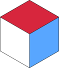

1.56E4= 156005E-2= 0.051.56*10^4× power-of-ten10^-3pure power of ten-3.2E7negative value1.6x10^5use E or *10^, not x1E(-3)no parens around exponent4.1 E 5no spaces around EN/Cslash = divisionm s^(-1)space = multiplym/ssame as m s^(-1)N mspace = multiplym^2exponent with ^kN m^(-2)neg exp needs ( )kg m s^(-2)= kg m/s² = NN m^2 C^(-1)permutations OKN*m* not supported — use spacem/s^(-2)( ) only on negative exponentskn or KNunits are case-sensitivep n µ/u m c10⁻¹² → 10⁻²k M G T10³ → 10¹²mm km nsprefix + unit, no spacekOhm MHz GPaworks on most SI unitsmm, km, ns, µF or uF — not on kg (already prefixed)1.56E4= 156005E-2= 0.051.56*10^4× power-of-ten10^-3pure power of ten-3.2E7negative value1.6x10^5use E or *10^, not x1E(-3)no parens around exponent4.1 E 5no spaces around EN/Cslash = divisionm s^(-1)space = multiplym/ssame as m s^(-1)N mspace = multiplym^2exponent with ^kN m^(-2)neg exp needs ( )kg m s^(-2)= kg m/s² = NN m^2 C^(-1)permutations OKN*m* not supported — use spacem/s^(-2)( ) only on negative exponentskn or KNunits are case-sensitivep n µ/u m c10⁻¹² → 10⁻²k M G T10³ → 10¹²mm km nsprefix + unit, no spacekOhm MHz GPaworks on most SI unitsmm, km, ns, µF or uF — not on kg (already prefixed)